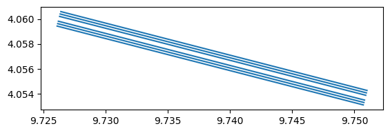

cml = open_cml_sample()Convert CML data
This module provides functions to convert CML xarray data into other formats such as GeoDataFrames.
Convert sublinks to GeoDataFrame
When a CML has multiple sublinks, they share the same geometry. To visualize them distinctly on a map, we offset each sublink perpendicularly to the link direction using the normal vector of the line. Sublinks alternate on each side of the original link, spreading outward.
Warning
The perpendicular offset is applied in degrees of longitude/latitude. Near the equator, 1° of longitude ≈ 1° of latitude ≈ 111 km, so the default offset of 2e-4° ≈ 20 m. At higher latitudes, degrees of longitude shrink (by a factor of cos(latitude)), so the same offset in degrees will correspond to a different physical distance.
cml_df = cml_df.dropna(subset=["site_0_lat", "site_0_lon", "site_1_lat", "site_1_lon", "frequency"], how="any")
cml_df.head(2)| cml_id | sublink_id | frequency | site_0_lat | site_0_lon | site_1_lat | site_1_lon | transmitter | length | |
|---|---|---|---|---|---|---|---|---|---|
| 0 | 4.056847N-9.738556E | 0_0 | 12765.0 | 4.060028 | 9.726194 | 4.053667 | 9.750917 | 0.0 | 2834.0 |
| 1 | 4.056847N-9.738556E | 0_1 | 13031.0 | 4.060028 | 9.726194 | 4.053667 | 9.750917 | 1.0 | 2834.0 |
We define the direction vector \(\mathbf{v}\) for each sublink as the difference in coordinates: \[\mathbf{v} = (\Delta \text{lon}, \Delta \text{lat}) = (\text{lon}_1 - \text{lon}_0, \text{lat}_1 - \text{lat}_0)\]
As you move away from the equator, the distance represented by one degree of longitude shrinks. To make our direction vector \(\mathbf{v}\) meaningful in a local Cartesian-like space, we need to scale the longitudinal component (\(\Delta \text{lon}\)) by the cosine of the latitude:
\[\Delta \text{lon}_{\text{scaled}} = \Delta \text{lon} \cdot \cos(\phi)\]
where \(\phi\) is the latitude (converted to radians in your code). This ensures that a “step” in the x-direction is physically comparable to a “step” in the y-direction, regardless of where the link is located on Earth.
To make the sublinks visually distinct, we calculate a normal vector (\(\mathbf{n}\)) that is perpendicular to the link’s direction vector (\(\mathbf{v}\)).
If our direction vector is \(\mathbf{v} = (v_x, v_y)\), we can find a perpendicular vector by swapping the components and negating one: \[\mathbf{n} = (-v_y, v_x)\]
You can check that this is perpendicular because the dot product \(\mathbf{v} \cdot \mathbf{n} = v_x(-v_y) + v_y(v_x) = 0\).
However, this normal vector \(\mathbf{n}\) might have any length. To control the offset distance precisely, we need a unit normal vector (\(\mathbf{\hat{n}}\)) with a length of 1: \[\mathbf{\hat{n}} = \frac{\mathbf{n}}{||\mathbf{n}||} = \frac{(-v_y, v_x)}{\sqrt{(-v_y)^2 + v_x^2}}\]
Because we calculated the normal vector \(\mathbf{n}\) in a Cartesian-like space where the x-axis was compressed by \(\cos(\phi)\), its longitudinal component \(n_x\) is currently in those scaled units. To use this as a coordinate offset in degrees of longitude, we must “unscale” it:
\[n_{x, \text{degrees}} = \frac{n_{x, \text{scaled}}}{\cos(\phi)}\]
This brings the vector component back to the original degree units so it can be added directly to the latitude and longitude coordinates.
To calculate the offset for each sublink, we will determine a magnitude based on the sublink’s position relative to the main link:
- Relative Numbering: Each sublink is assigned an index \(i\).
- Alternating Direction: We assign a sign \(s \in \{-1, 1\}\) to ensure sublinks are distributed on both sides of the main link path: \[s = (i \pmod 2) \cdot 2 - 1\]
- Magnitude: The total offset \(M\) is calculated by multiplying the base offset \(O\) (approx. 20m) by the pairing factor \(\lfloor i/2 \rfloor\) and the alternating sign: \[M = O \cdot \lfloor i/2 \rfloor \cdot s\]
This creates a spreading effect where sublinks are placed at increasing distances from the center, alternating in direction for better visualization. The center of the link is left empty to be able to plot the link.
Finally, we shift the coordinates of both the start point (\(P_0\)) and the end point (\(P_1\)) of the sublink by the calculated magnitude (\(M\)) along the unit normal vector (\(\mathbf{\hat{n}}\)) to obtain the new geometry coordinates:
\[P_{0, \text{new}} = P_0 + M \cdot \mathbf{\hat{n}}\] \[P_{1, \text{new}} = P_1 + M \cdot \mathbf{\hat{n}}\]
Warning
The offset is applied only to the coordinates of the lines that form the GeoDataFrame geometry, not to the original site coordinate columns stored in the metadata. This distinction is crucial to preserve the original data, ensuring that you can easily perform backward conversion from a GeoDataFrame back to the original xarray format later.
convert_sublinks_to_gdf
def convert_sublinks_to_gdf(
cml:xarray.core.dataarray.DataArray | xarray.core.dataset.Dataset, # CML data
only_meta:bool=True, # The GeoDataFrame will only contain metadata
offset:float=0.0002, # Perpendicular offset in degrees (2e-4 ~ 20m in the equator) in order to avoid overlap in visualization
)->GeoDataFrame:
Convert CML to a GeoDataFrame assuming EPSG:4326 projection
convert_sublinks_to_gdf(cml).plot()
convert_sublinks_to_gdf(cml, only_meta=False).head(2)| cml_id | sublink_id | time | frequency | site_0_lat | site_0_lon | site_1_lat | site_1_lon | transmitter | length | geometry | rsl_avg | tsl_avg | rsl_min | tsl_min | rsl_max | tsl_max | |
|---|---|---|---|---|---|---|---|---|---|---|---|---|---|---|---|---|---|
| 0 | 4.056847N-9.738556E | 0_0 | 2019-07-01 00:05:00 | 12765.0 | 4.060028 | 9.726194 | 4.053667 | 9.750917 | 0.0 | 2834.0 | LINESTRING (9.72614 4.05983, 9.75087 4.05347) | -43.3 | 13.0 | -43.4 | 13.0 | -43.1 | 13.0 |
| 1 | 4.056847N-9.738556E | 0_0 | 2019-07-01 00:20:00 | 12765.0 | 4.060028 | 9.726194 | 4.053667 | 9.750917 | 0.0 | 2834.0 | LINESTRING (9.72614 4.05983, 9.75087 4.05347) | -43.2 | 13.0 | -43.3 | 13.0 | -43.1 | 13.0 |